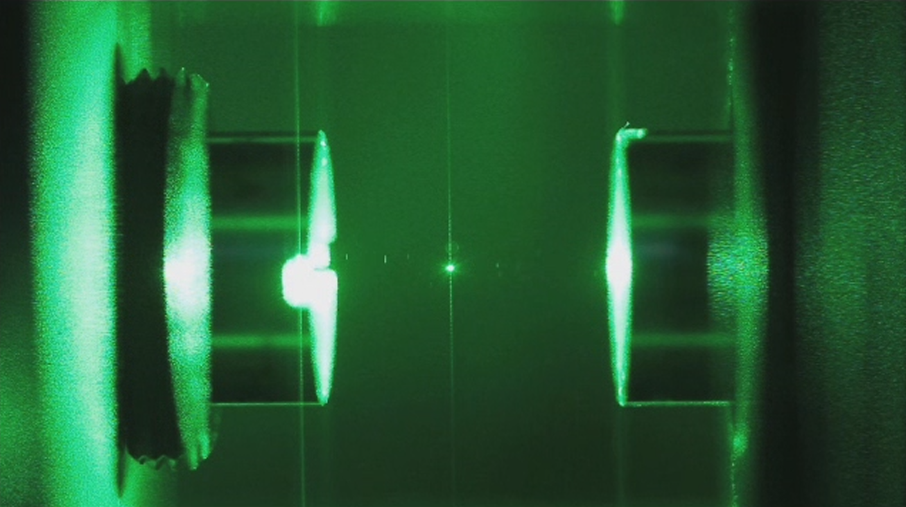
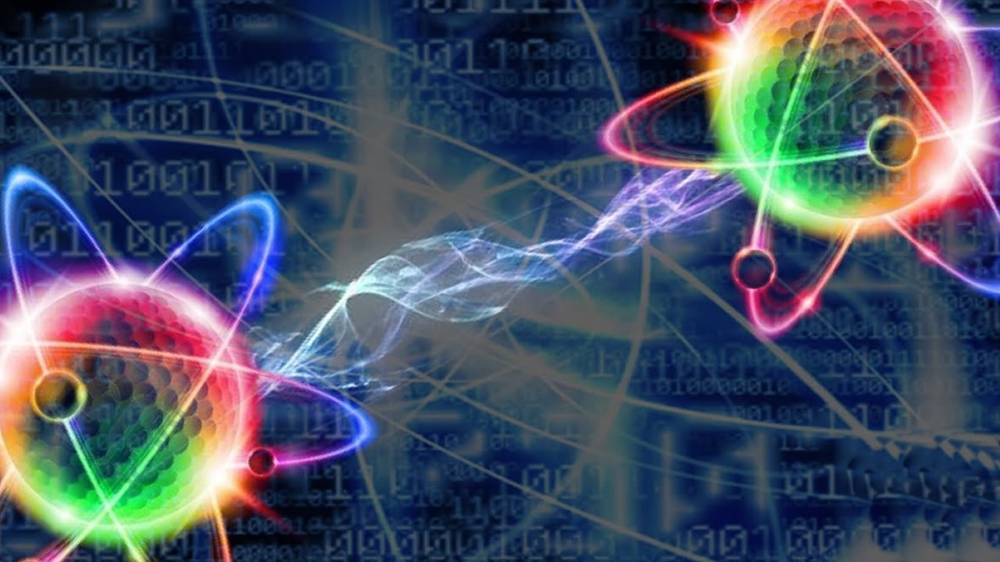

Fenomenos cuánticos que superan la ficcion
“Dentro de nuestro mundo existe otro mundo, uno sumamente pequeño donde las cosas no son lo que parecen, donde reinan las leyes de la mecánica cuántica, que estudia cómo son las leyes de la física a escalas atómicas. Es aquí donde planteamos nuestra propuesta experimental, pero a escalas mesoscópicas, es decir, observamos fenómenos cuánticos a escalas no tan pequeñas”.
Un equipo internacional de investigadores de Barcelona, Zúrich y Viena ha descubierto que una nanopartícula atrapada mediante luz láser viola temporalmente la segunda ley de la termodinámica, algo que es imposible a escalas de tiempo y longitud humanas. En concreto, pueden transferir calor a un gas todavía más caliente.
El entrelazamiento cuántico
El concepto del entralazamiento cuántico fue introducido por Einstein, Podolsky y Rosen en el año 1935 y se lo conoció como «la paradoja EPR«.La paradoja consiste en la posibilidad de que dos objetos que se encuentran físicamente separados, inclusive por millones de kilómetros entre sí, se puedan comunicar. Es decir, que dos objetos pueden compartir la misma información y alterar su estado, aunque tan solo uno de los dos objetos sea el afectado.En la actualidad, este tipo de experimentos se realizan con fotones de luz y no con electrones, que nacen de una misma fuente.
Lo impresionante es que el intercambio de partículas se transmite a la velocidad de la luz: 300.000 kilómetros por segundo.Llegados a este punto, hemos de incorporar también el concepto de incertidumbre, propuesto por Werner Heisenberg a mediados del Siglo XX, que está estrechamente ligado al concepto del entrelazamiento cuántico.La incertidumbre afirma y demuestra que no es posible medir al mismo tiempo la velocidad y la posición de una partícula en un instante dado. Cuando se mide la posición, la velocidad se cancela. O viceversa.Por ende, una de las principales características del universo cuántico y del reino de subatómico, es que no podemos saber con exactitud dónde están los objetos. El hecho de medir se traduce, paradójicamente, en lo inmedible, inobservable y no localizable.
Superposición cuántica
Superposición cuántica ocurre en la naturaleza cuando una partícula elemental posee simultáneamente dos o más estados, como pasa por ejemplo con los fotones, que pueden permanecer en dos lugares diferentes al mismo tiempo, algo inimaginable en el mundo físico ordinario.Esta propiedad se ha observado también en otras partículas, como los electrones o neutrones, en los átomos o incluso en pequeñas moléculas, según ha ido descubriendo la ciencia.Este recorrido ha llevado a los científicos a preguntarse dónde está la frontera entre el mundo cuántico y lo que llamamos el mundo real, cuándo una partícula deja de ser cuántica y se somete a las leyes físicas conocidas.
Es decir, qué tiene que ocurrir para que en determinado momento de la arquitectura de la realidad, la materia adquiera las características físicas que nos permiten estudiarla, conocerla y desentrañarla, comprender su dinámica natural, tal como hacemos con la materia.Una nueva investigación desarrollada ahora entre la Universidad de Viena (Austria) y la Universidad de Basilea (Suiza) ha dado un paso significativo en dirección a determinar cuándo el mundo cuántico empieza a comportarse como el mundo que conocemos en la vida cotidiana.
Efecto túnel
El efecto túnel ocurre cuando un electrón puede atravesar una barrera de potencial lo que estaría prohibido en física clásica ya que el electrón rebotaría como una pelota de frontón. Esto es posible debido al carácter ondulatorio del electrón.La mayor parte de la electrónica tiene su base en el efecto túnel. El efecto túnel también es la base del microscopio de efecto túnel (STM por sus siglas en inglés) que toma imágenes de superficies a nivel atómico.
Grandes proezas de la fisica cuántica
| Fisico | Ley Importante | Fecha |
|---|---|---|
| Niels Bohr | Modelo atómico de Bohr | 1885-1962 |
| Max Planck | Radiación de cuerpo negro | 1858-1947 |
| Erwin Schrödinger | Ecuación de onda | 1887-1961 |
Mas relevantes de la decada
- Bosón de Higgs.
- CRISPR.
- Ondas gravitacionales.
- Supremacía cuántica.
Niels Bohr
Físico danés. Considerado como una de las figuras más deslumbrantes de la física contemporánea y, por sus aportaciones teóricas y sus trabajos prácticos, como uno de los padres de la bomba atómica, fue galardonado en 1922 con el Premio Nobel de Física "por su investigación acerca de la estructura de los átomos y la radiación que emana de ellos".